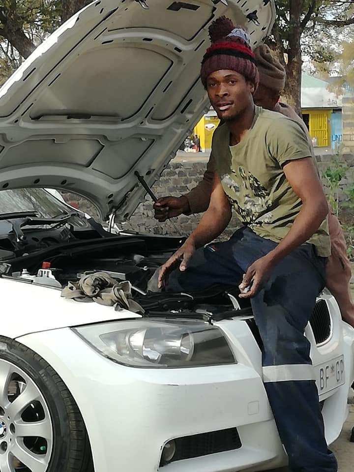
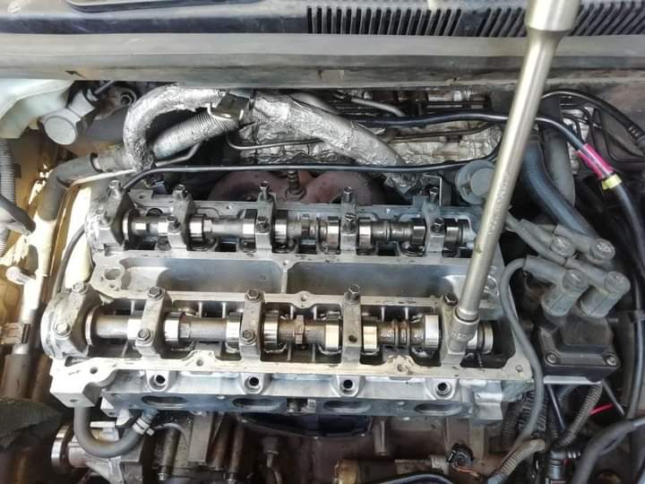
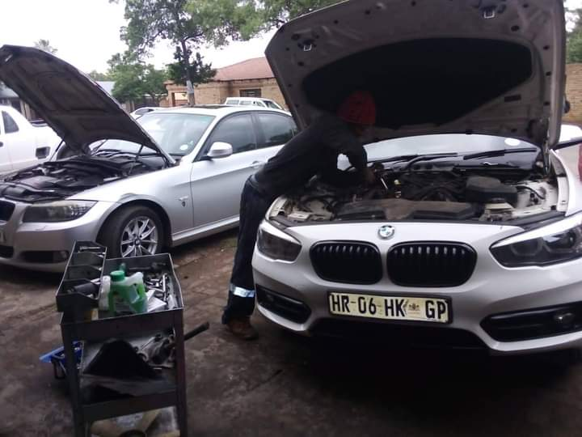
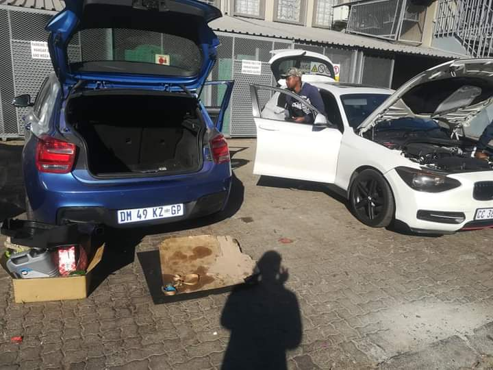
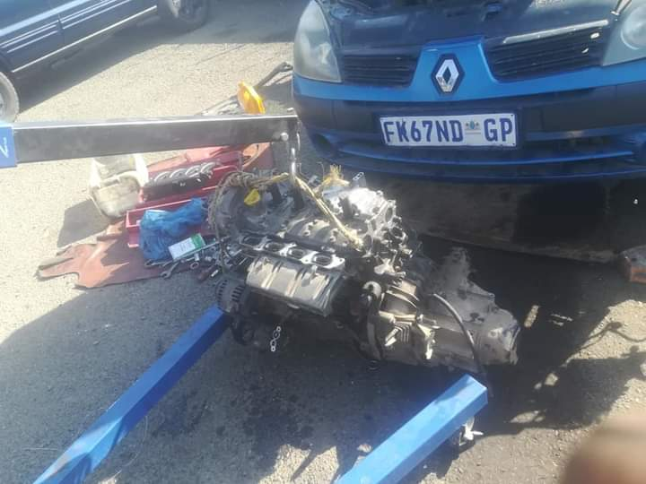

WE FIX ALL MODELS FROM MERCEDES, BMW, AUDI, TOYOTA, NISSAN JUST TO NAME A FEW.

About Us
Kevy the mechanic has over ten years experience in vehicle services and repairs. He has worked on all models and for
big motor vehicle companies from Mercedes to Totoya gaining much experience needed for the field.

Minor service is our daily food.


We do engine overhaul, so proffessional it will feel like new.
